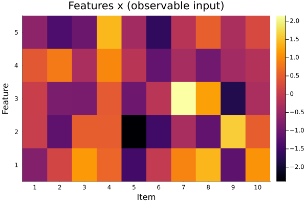
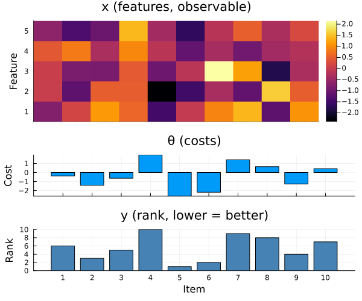
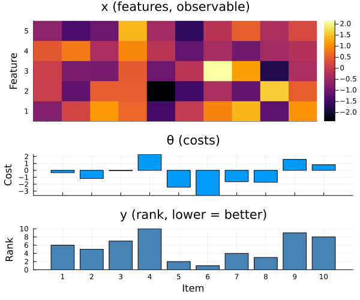

Ranking
Rank a set of items. Each item has a hidden score, correlated with observable input features. The goal is to learn to sort items by their hidden scores, using observable features alone.
using DecisionFocusedLearningBenchmarks
using Plots
b = RankingBenchmark()RankingBenchmark(instance_dim=10, nb_features=5)Observable input
At inference time the decision-maker observes only the feature matrix x (rows = features, columns = items):
dataset = generate_dataset(b, 50; seed=0)
sample = first(dataset)
plot_context(b, sample)
A training sample
Each sample is a labeled triple (x, θ, y):
x: feature matrix (rows = features, columns = items; observable at train and test time)θ: true item costs (training supervision only, hidden at test time)y: ordinal ranks derived fromθ(y[i] = 1means itemihas the lowest cost)
The full training triple (features, true costs, and derived ranking):
plot_sample(b, sample)
Untrained policy
A DFL policy chains two components: a statistical model predicting item scores:
model = generate_statistical_model(b) # linear map: features → predicted costsChain(
Dense(5 => 1; bias=false), # 5 parameters
vec,
) and a maximizer ranking items by those scores:
maximizer = generate_maximizer(b) # ordinal ranking via sortpermranking (generic function with 1 method)A randomly initialized policy produces an arbitrary ranking:
θ_pred = model(sample.x)
y_pred = maximizer(θ_pred)
plot_sample(b, DataSample(sample; θ=θ_pred, y=y_pred))
Optimality gap on the dataset (lower is better):
compute_gap(b, dataset, model, maximizer)0.824171f0Problem Description
In the Ranking benchmark, a feature matrix $x \in \mathbb{R}^{p \times n}$ is observed. A hidden linear encoder maps $x$ to a cost vector $\theta \in \mathbb{R}^n$. The task is to compute the ordinal ranking of the items by cost:
\[y_i = \mathrm{rank}(\theta_i \mid \theta_1, \ldots, \theta_n) = \mathop{\mathrm{argmax}}\limits_{y\in\sigma(n)} \theta^\top y\]
where $y_i = 1$ means item $i$ has the lowest cost.
Key Parameters
| Parameter | Description | Default |
|---|---|---|
instance_dim | Number of items to rank | 10 |
nb_features | Feature dimension p | 5 |
DFL Policy
\[\xrightarrow[\text{Features}]{x} \fbox{Linear model} \xrightarrow{\theta} \fbox{ranking} \xrightarrow{y}\]
Model: Chain(Dense(nb_features → 1; bias=false), vec): predicts one score per item.
Maximizer: ranking(θ): returns a vector of ordinal ranks via invperm(sortperm(θ)).
This page was generated using Literate.jl.